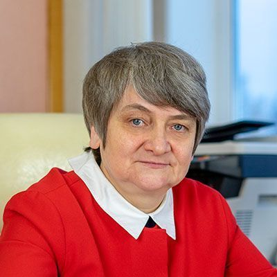

| Факультеты | - Факультет информационных систем и технологий - Самолетостроительный факультет ИАТУ - Инженерно-экономический факультет - Строительный факультет - Энергетический факультет - Машиностроительный факультет - Радиотехнический факультет - Гуманитарный факультет |
| Самый популярный факультет среди абитуриентов | На 1 месте конечно же Факультет информационных систем и технологий (ФИСТ!ФИСТ!ФИСТ!) На 2 месте Инженерно-экономический На 3 месте Гуманитарный Факультет |
| Об университете |
Ульяновский государственный технический университет (УлГТУ) был основан 18 сентября 1957 года как Ульяновский политехнический институт на базе вечернего филиала Куйбышевского индустриального института. Некоторые ключевые моменты истории университета: - Первоначально занятия в институте проводились в сложных условиях. Почти полностью отсутствовали необходимое учебное оборудование и приборы, учебная и научная литература. В 1962 году было принято Постановление Совета Министров СССР и Совмина РСФСР об организации Ульяновского политехнического института с дневной формой обучения. - В 1975 году в северной части города началось строительство учебного корпуса института. 26 мая 1994 года Ульяновский политехнический институт был преобразован в Ульяновский государственный технический университет. |
| Руководство | Надежда Глебовна Ярушкина ректор Ульяновского государственного технического университета, доктор технических наук, профессор, Почетный работник высшего профессионального образования РФ, Заслуженный профессор УлГТУ, заместитель председателя Общественного экспертного совета по развитию информационных технологий при Губернаторе Ульяновской области, член Президиума Регионального политического совета Партии «Единая Россия».  |